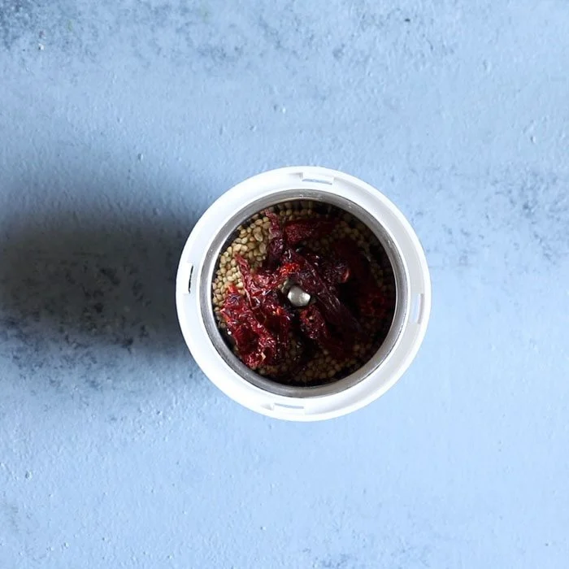

Ingredients You Need
Aside from the paneer itself, the three quintessential ingredients added to kadai paneer are: onions, capsicum (green bell peppers) and tomatoes. A freshly ground spice mixture made from coriander seeds and dry red chillies – known as kadai masala is also added. If you do not have these whole spices to grind at home, you can simply add ground spices like turmeric, red chili powder, garam masala and coriander instead. That said, the freshly pounded kadai masala does lend a beautifully bold flavor to the recipe – if possible, I recommend you make it fresh.
How To Make Kadhai Paneer
Recipe 1
Make Kadhai Masala
1. In a spice-grinder, mixer-grinder or mortar-pestle, take 1.5 tablespoons coriander seeds and 5 to 6 Kashmiri red chilies. TIP: Tear or break the dry chillies and remove the seeds before you make the kadai masala. Also ensure that your spices are fresh and without any molds or insects.
